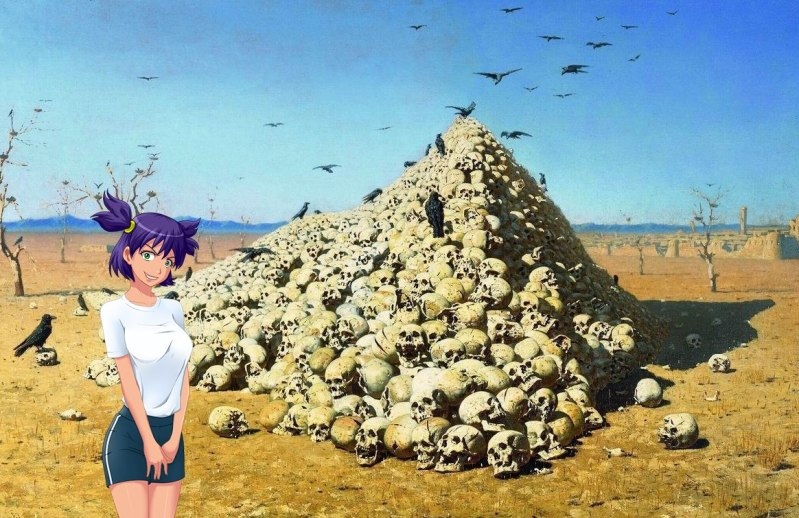
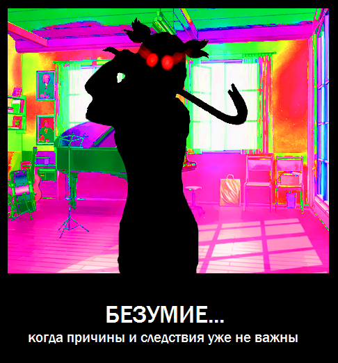

Шутки для трио Ульяна, Алиса, Семен.
Страница 10 из 27 •  1 ... 6 ... 9, 10, 11 ... 18 ... 27
1 ... 6 ... 9, 10, 11 ... 18 ... 27
Re: Шутки для трио Ульяна, Алиса, Семен.
автор Chess в Чт 20 Ноя 2014 - 1:03

Chess- Находка для шпиона

- Сообщения : 3798
Дата регистрации : 2014-10-05
Откуда : Город на краю света
Re: Шутки для трио Ульяна, Алиса, Семен.
автор Гость в Чт 20 Ноя 2014 - 1:06
Гость- Гость
Re: Шутки для трио Ульяна, Алиса, Семен.
автор Гость в Чт 20 Ноя 2014 - 1:07
Гримми пишет:Господа вы зунаете что сельское хозяйство(и хозяек)надо беречь а?:-)
А ты не мог бы расшифровать сие послание? Что-то я намеки плохо понимать стал.
Гость- Гость
Re: Шутки для трио Ульяна, Алиса, Семен.
автор Гость в Чт 20 Ноя 2014 - 1:08
Гость- Гость
Re: Шутки для трио Ульяна, Алиса, Семен.
автор Chess в Чт 20 Ноя 2014 - 1:09
Открою секрет - врёт она, как сивый мерин.Гримми пишет:ПТИЧКУ...тфу колхозницу жалко...
Chess- Находка для шпиона
- Сообщения : 3798
Дата регистрации : 2014-10-05
Откуда : Город на краю света
Re: Шутки для трио Ульяна, Алиса, Семен.
автор Гость в Чт 20 Ноя 2014 - 1:09
Гость- Гость
Re: Шутки для трио Ульяна, Алиса, Семен.
автор Гость в Чт 20 Ноя 2014 - 1:10
Chess пишет:Открою секрет - врёт она, как сивый мерин.Гримми пишет:ПТИЧКУ...тфу колхозницу жалко...
Не спойлери!!!
Гость- Гость
Re: Шутки для трио Ульяна, Алиса, Семен.
автор Chess в Чт 20 Ноя 2014 - 1:11
Можно подумать, никто даже не догадывался.Макс Ветров пишет:Chess пишет:Открою секрет - врёт она, как сивый мерин.Гримми пишет:ПТИЧКУ...тфу колхозницу жалко...
Не спойлери!!!
Chess- Находка для шпиона
- Сообщения : 3798
Дата регистрации : 2014-10-05
Откуда : Город на краю света
Re: Шутки для трио Ульяна, Алиса, Семен.
автор Гость в Чт 20 Ноя 2014 - 1:11
Гость- Гость
Re: Шутки для трио Ульяна, Алиса, Семен.
автор peregarrett в Чт 20 Ноя 2014 - 2:04

peregarrett- Находка для шпиона
- Сообщения : 3264
Дата регистрации : 2014-09-07
Возраст : 36
Chess- Находка для шпиона
- Сообщения : 3798
Дата регистрации : 2014-10-05
Откуда : Город на краю света
peregarrett- Находка для шпиона
- Сообщения : 3264
Дата регистрации : 2014-09-07
Возраст : 36
Re: Шутки для трио Ульяна, Алиса, Семен.
автор Chess в Чт 20 Ноя 2014 - 2:10
Chess- Находка для шпиона
- Сообщения : 3798
Дата регистрации : 2014-10-05
Откуда : Город на краю света
Re: Шутки для трио Ульяна, Алиса, Семен.
автор Гость в Пт 21 Ноя 2014 - 1:41

Апофеоз, же!
Гость- Гость
Re: Шутки для трио Ульяна, Алиса, Семен.
автор peregarrett в Пт 21 Ноя 2014 - 1:45
peregarrett- Находка для шпиона
- Сообщения : 3264
Дата регистрации : 2014-09-07
Возраст : 36
Re: Шутки для трио Ульяна, Алиса, Семен.
автор Гость в Сб 22 Ноя 2014 - 1:25

Гость- Гость
Re: Шутки для трио Ульяна, Алиса, Семен.
автор Chess в Сб 22 Ноя 2014 - 1:27
«А-а-а-а, мои глаза!!!» и «Сделайте меня это развидеть, пожалуста!», кое у кого из глаз пошла кровь."
Chess- Находка для шпиона
- Сообщения : 3798
Дата регистрации : 2014-10-05
Откуда : Город на краю света
Re: Шутки для трио Ульяна, Алиса, Семен.
автор Гость в Сб 22 Ноя 2014 - 1:28
Chess пишет:«А-а-а-а, мои глаза!!!» и «Сделайте меня это развидеть, пожалуста!», кое у кого из глаз пошла кровь."
За то смотри какая монтировка!
Гость- Гость
Re: Шутки для трио Ульяна, Алиса, Семен.
автор Chess в Сб 22 Ноя 2014 - 1:31
Chess- Находка для шпиона
- Сообщения : 3798
Дата регистрации : 2014-10-05
Откуда : Город на краю света
Re: Шутки для трио Ульяна, Алиса, Семен.
автор Гость в Сб 22 Ноя 2014 - 1:32
Chess пишет:Ты на цвета посмотри - ужас эпилептика.
Так и задумано! Безумие же! И... помнишь, КУДА она целится?
Гость- Гость
Re: Шутки для трио Ульяна, Алиса, Семен.
автор Гость в Вс 23 Ноя 2014 - 23:34
Исправил сцену на эстраде перед ужином пятого дня (признание Семена):
- Уход на романтик-трио:
- Я быстрым шагом добрался до эстрады, нисколько не церемонясь, поднялся на сцену и сел рядом с Алисой, увлеченно выводящей на своей акустике какую-то смутно знакомую мелодию. Думать не хотелось. Совсем. Щемящее чувство неправильности происходящего сильно отравляло душу. Мысли разбегались, словно ошпаренные тараканы. Что-то было не так. И причиной этому была не та неловкая сцена с Леной. Причина сейчас сидела рядом со мной, успешно игнорируя мое присутствие.
Мелодичный перебор аккордов звучал как-то неспокойно. Или мне это уже казаться начало? Нет, песня, определенно, знакомая, из моей подборки. От неё прямо веет безысходностью… Реквием по мечте! Точно! Значит, не у одного меня на душе кошки скребут. Надо поговорить с Алисой. Нельзя так оставлять. Но как начать разговор?
- Почему ты здесь? – Пока я размышлял, Алиса начала первой.
- А где мне ещё быть?
- Ну… как же? А кто же будет утешать невинно пострадавшую?
- Кого?
- Семен не тупи! Я же все прекрасно понимаю! Вся эта сцена, что она устроила… - Голос Двачевской вполне ощутимо дрогнул. – А ты повелся! Ну как же! Девочку обидел! Обманул! Теперь будешь прощение вымаливать?
Я попытался разложить по полочкам только что услышанный кусок женской логики. Не с первого раза, но получилось. Она что? Серьезно? Так вот почему Алиса на ужине одна села! Нда… не понимаю я слабый пол. Совсем не понимаю. Делаю глубокий вдох:
- Мне плевать, кто кого должен утешать и просить прощения. Я пришел именно туда, куда хотел.
Алиса, наконец, посмотрела на меня. В ясных светло-карих глазах бушует целый ураган противоречивых чувств и эмоций. Влажные дорожки на щеках сказали гораздо больше, чем слова. Я продолжил:
- Да, мне не по себе. Но не от того, что обидел Лену.
- А от чего? – Голос Двачевской стал ровным, но начисто лишился обычного вызывающего тона.
- От того, что один очень дорогой мне человек почему-то понапридумывал себе черт знает чего, и сам же обиделся на свои домыслы.
- А что я должна была подумать! – Крепкие пальцы Алисы до треска сжали гриф. Из глаз разве что молнии не летели. – Я видела, как она на тебя смотрит! А потом… ты назначил ей свидание…
- Которое прогулял с тобой и Ульяной! – Сам того не желая, я тоже вспыхнул. – Я вас отмазывал! Вы мне гораздо дороже, чем Лена, Славя, Мику, Жужелица и все остальные девчонки Земли вместе взятые!
На какое-то время воцарилась тишина.
- Мы? – В голос Алисы вернулась былая насмешливость.
- Конкретно ты. – Сказал я быстрее, чем подумал.
Дошло до Алисы быстро, и реакция не заставила себя ждать: она натуральным образом зависла, уперев в меня свои раскрытые до предела глазищи. Отступать некуда. Момент истины.
- Ты была права. В лагере мне нравится одна девушка. Но это не Лена. Это ты.
Тишина длится какое-то время. Алиса бестолково возит пальцами по струнам и изо всех сил старается не смотреть мне в глаза. Наконец, видимо, на что-то решившись она произносит:
- Семен, понимаешь, я… ну…
- Вот вы где! – Ульяна! Как всегда, во время! – Что вы тут расселись? Скоро же поход! А мы ещё дымовуху не изготовили! Давайте быстрее! Мероприятие само себя не сорвет!
Далее у нас 6 день, замес на концерте, диверсия на дискотеке (ещё не прописано), потом Трио уходит в леса, каратели собираются в музклубе (перенесено сюда с конца 5 дня), Ульяна бросает им красочную бомбу, они переодеваются в камуфляж и выходят в рейд.
Рейд Славя организует правильно, вооружает девчонок рогатками, дубинами и монтировками. После нескольких стычек Славя устраивает засаду, в ходе которой Семен ценой неслабой раны на ноге спасает Алису от хедшота из рогатки Мику (прыгнул, сильно поцарапался, поймал снаряд спиной, прикрыв Алису). Трио убегает. Далее собственно:
- побег с хентаем:
- - Сема, давай! Ещё немного! – В голосе Алисы чувствовалось неподдельное беспокойство. – Потерпи чуть-чуть! Мы вроде как оторвались.
- Нормально… я… в порядке… - Сквозь сбитое дыхание мой голос звучал не так уверенно, как хотелось бы.
Мы бежали уже довольно долго. Я потерял счет времени, а остатки сознания растворились в расплавленном свинце, что заполнял сейчас мои легкие, заглушая даже жгучую боль от рваной раны на правой ноге. Если бы не крепкое плечо Алисы, я бы, наверное, уже давным-давно повалился без сил, но само присутствие рыжей бестии как будто придавало мне дополнительные силы. И я продолжал бежать вперед.
- Вон та полянка! – Двачевская резко рванула в сторону. – Они отстали?
Ульяна, бежавшая немного позади нас, резко замерла и прислушалась:
- Я ничего подозрительного не слышу. Но Славя – настоящий следопыт. Долго нам скучать не даст.
Втроем мы буквально вывалились на небольшую полянку, окруженную плотным кустарником. Я тут же растянулся на мягкой траве и обессилено уставился в небеса, безуспешно пытаясь отдышаться. Девчонки упали рядом. Пару минут спустя, Алиса, наконец, прервала затянувшееся молчание.
- Да, взбесили мы их основательно. Они за нас всерьез взялись.
- Да уж. Камуфляж напялили, засаду устроили. Ну, самые настоящие каратели, блин! – Ульяна злобно усмехнулась. – Автоматов только не хватает и танков.
- Не накаркай! Семену вон, уже по полной досталось. Кто же знал, что наша певица японская так метко из рогатки стреляет. Ладно хоть от Лены убежали. Ты её глаза видела?
- Ага, аж холодок по спине пробежал. Да и Славя не лучше. Ну, чистый эсэсовец!
Девчонки нервно рассмеялись. Через какое-то время Алиса придвинулась ко мне, осмотрела поврежденную ногу, взглянула в лицо. Какое-то время колебалась, но потом несмело положила свою руку поверх моей.
- Ты как? Отошел?
- Почти… - Мое дыхание все ещё не выровнялось, а в висках словно кто-то бил в барабаны. – Спасибо, Алис…
Она крепко сжала мою руку, затем резко обернулась к Ульяне.
- Семену надо прийти в себя. Далеко мы с ним не убежим.
- И что делать? – Ульяна непонимающе посмотрела на старшую подругу.
- Надо их отвлечь. Увести от нас. Сможешь?
- Да запросто! – Младшая рыжая слегка подмигнула. – Оттащу их к берегу. Там овраги и валежник глухой.
- Отлично. Как только оторвешься от них – дуй к старому лагерю. Там и встретимся.
Ульяна ещё какое-то время провозилась на поляне, затем скрипнули раздвигаемые кусты и девочка растворилась в лесной чаще. Я постепенно начал приходить в себя. Недавние события казались настолько нереальными, что мозг решительно отказывался их воспринимать. Но поделать я ничего уже не мог. Алиса сначала суетилась на краю полянки, затем подошла ко мне и начала что-то делать с раной на моей ноге. Тупая боль резко хлестнула по нервам, затем по измученной конечности начала расползаться приятная прохлада.
- Я тебе травяной компресс наложила. Как до убежища доберемся, так нормально перевяжу. – Двачевская снова взяла меня за руку. – Ты так меня не пугай больше! Ты же совсем расшибиться мог!
- Мику в тебя целилась. И она бы не промазала. Они все как будто помешались. – Я, наконец, вновь обрел способность нормально разговаривать. – Алиса, я…
Внезапно где-то в лесу треснула сухая ветка. Переглянувшись, мы быстро, но очень тихо заползли под густой кустарник на краю полянки. Там обнаружилась небольшая ложбинка, скрытая переплетенными ветвями и устланная мягкой травой с опавшими листьями. Такая поспешность оказалась совершенно не лишней. Сначала послышалось какое-то невнятное мурлыканье, в котором я не без удивления узнал с детства знакомую мелодию:
- «Тили-тили! Трали-вали! Это мы не проходили! Это нам не задавали!» -
Словно подтверждая всю нелепость и сюрреалистичность происходящего, на противоположном краю полянки показалась Лена. Легкий летний камуфляж как влитой сидел на её ладной фигуре. Постоянно напевая нехитрую мелодию, она резко размахивала здоровенной монтировкой из стороны в сторону. Внезапно бывшая милая скромница остановилась на полуслове, внимательно осмотрела окрестности.
- Семен! Хватит прятаться! – Монтировка со свистом рассекла воздух, срубив несколько верхушек кустов. – Сдавайся добровольно! Все равно не убежишь!
Громкий, совершенно безумный смех больно резанул по ушам. Захотелось вскочить и бежать, куда глаза глядят, лишь бы подальше от этого ожившего ужаса с пустыми, холодными глазами. Однако Алиса, плотно прижавшаяся к моему боку, не позволила поддаться слабости. Сразу после того, как мы спрятались в кустах, она крепко вцепилась в меня, обвила шею руками и не отпускала ни на миг. И это, как ни странно, помогло. Ни я, ни она не чувствовали себя одинокими. Нас двое, а значит, мы ещё повоюем.
- Слева! Я их слышу! – Громкий голос Слави прозвучал совсем рядом. – К реке рвутся! Бегом!
Лена резко сорвалась с места и понеслась вслед за своим командиром. Судя по шуму и треску веток, все четыре карательницы попались на уловку Ульяны. Какое-то время спустя, все посторонние шумы затихли в вечернем лесу, и мы с Алисой, наконец, смогли спокойно вздохнуть.
Только теперь до меня дошло, что мы лежим практически в объятиях друг друга, а наши лица сейчас совсем близко. Неоднозначность ситуации, неопределенность наших с Алисой отношений, да и вообще все, что вокруг творится, основательно сбили меня с толку. Я не понимал, что делать. Не знал, как вести себя с ней. А потому мне казалось, что сложившееся «положение» Двачевская может трактовать как угодно: взбесится, оттолкнет меня, обозвав кобелем, или придумает ещё что-нибудь в этом духе. Как же я удивился, когда, подняв взгляд на её лицо, увидел слезы в глазах. Она смотрела на меня странным, совершенно не типичным для неё взглядом, в котором не было ни надменности, ни отстраненности. В них было… тепло? Сильные пальцы крепко вцепились в плечи. Девушка глубоко вздохнула и заговорила:
- Семен, я должна тебе кое-что сказать. Все вокруг летит к чертям… другого шанса может не быть, а я не могу… не хочу…
Я видел, что Алисе невыносимо сложно говорить, но перебивать её не стал бы ни за что на свете. Я просто терпеливо ждал. И тонул в её блестящих глазах.
- Понимаешь, я всю жизнь была одна. Я должна была быть сильной… но это чертовски трудно! А ещё труднее – это когда никому нельзя доверять. Со временем просто привыкаешь, что кругом враги, что все хотят сделать тебе больно. И можешь запросто оттолкнуть того, кто… - Её голос сорвался, а из глаз по пылающим щекам снова покатились слезы. – Тогда, на эстраде, когда ты сказал, что я нравлюсь тебе… я ведь сама себя убеждала, что это все не так и я не такая. Я просто по привычке запретила себе думать об этом. О тебе.
Алиса несколько раз тяжело вздохнула, ещё крепче, до боли, вцепилась в меня.
- Я не знала как себя вести, что думать, что делать… и делала как привыкла. Но когда ты сегодня прикрыл меня… ты ведь ни секунды не сомневался! Да Господи! Даже если бы в руках у Мику была не рогатка, а «Шмайсер», ты ведь то же самое сделал бы!
Не в силах больше сдерживаться, железная леди уронила голову на мое плечо и тихо разрыдалась. И с каждой новой слезинкой глупый, надуманный барьер между нами становился все меньше и меньше.
Глухой, еле внятный шепот у самого моего уха:
- Прости меня, Сема! Прости! За упрямство, за заносчивость, за…
- Не извиняйся, не надо! – Я немного отстранился, но только чтобы снова окунуться в её карие бездны. – Ты – такая, какая есть. И именно такую тебя я люблю.
Почему-то эти слова дались гораздо легче, чем я мог предположить. Легче чем когда-либо. Естественнее. И ответ на свой вопрос я тут же увидел в её глазах. Тонкие, нежные искорки счастья струились сейчас из них вместе со слезами. Девочка рискнула. Вылезла из своей железобетонной брони, открылась, доверилась. И почувствовала взаимность. А я почувствовал, что сжимаю в объятиях нечто гораздо большее, чем просто красивую девушку. Я не знаю, как это описать. Родственная душа? Вторая половинка? Нет, это намного шире. Она одновременно и полная моя копия, и абсолютная противоположность. Яд, который может исцелить. Наркотик, который отчищает мысли. Одновременно друг, любимая и самый сложный противник. С ней не будет букетов, конфет и милых нежностей. Зато, когда мне будет совсем плохо, она не станет истерить, докучать и плакать. Она просто поставит на стол две стопки и молча сядет напротив. И если весь долбанный мир будет против меня, я точно знаю – она встанет со мной спина к спине. И мы отобьёмся.
Все сомнения и недомолвки остались где-то далеко позади. Наши губы сами нашли друг друга. Горячие, страстные поцелуи. Она не умела, я основательно подзабыл, но природа сама подсказала. Наши языки сплелись. Сначала несмело, потом с все нарастающей страстью. Ничем более не ограниченный, дикий, необузданный темперамент Алисы сейчас вырвался на волю. Резким движением она опрокинула меня на спину, а сама оказалась сверху. Пуговицы моей рубашки разлетелись по кустам от сильного рывка – девушка даже и не думала притормаживать. Как и я. Уже основательно разболтанный узел её рубашки сдался, почти не сопротивляясь.
Молодое, загорелое тело Алисы обладало потрясающей гармонией – её крепкие мышцы идеально сочетались с приятными упругими округлостями, которые, освободившись от плена одежды, оказались более чем впечатляющими. Я подхватил её за ягодицы и рванул вверх. Наш поцелуй разорвался, но я тут же поймал губами один из её сосков. Уже затвердевший до состояния каленой стали и обжигающе горячий. Терпения хватило только на пару нежных касаний, а потом я грубо, с покусываниями, впивался то в один, то в другой, мял руками бедра, груди. Алиса обоими руками вцепилась в мои волосы и тихонько постанывала. Мелкая дрожь расходилась волнами по всему её телу, заставляя сильнее сжимать пальцы и обвитые вокруг меня ноги.
Когда я снова увидел её глаза, в них уже стояла мутная масляная пелена, а дыхание основательно сбилось. Вздумай я сейчас остановиться – она бы убила меня и тут же и закопала, но останавливаться я не собирался. Ведь я сейчас был точно в таком же состоянии. Мне невыносимо хотелось в полной мере насладиться ей, выпить до дна. Отбросить все условности, отпустить все тормоза. Отключить мозг. Шиза что-то там вещала про девять месяцев и сломанные ребра, но мне было плевать.
В нашей ложбинке было тесно, но я каким-то чудом умудрился перевернуться и уложить Алису на землю. В следующее мгновение я уже был без шорт, а её юбка самым бесстыдным образом задрана и смята. Острые коготки впились в спину, недвусмысленно намекая поторапливаться. Кто я такой, чтобы спорить с дамой? Последняя преграда - уже основательно промокший предмет нижнего белья – сдвинута в сторону, а пальцы без труда находят горячий влажный бугорок. То, что я делаю, грубовато, конечно, но Алисе нравится. Она крепко обвила меня ногами, ногти уже, наверное, в кровь разодрали спину. Она даже не стонет, скорее рычит. Остатки самоконтроля рушатся под напором эмоций, и вхожу я грубее, что хотелось бы. Сдавленный вскрик, и крепкие мышцы сильно сдавливают меня внутри. Горячо, узко, больно, сладко… Мы теряем голову одновременно. Она буквально повисает на мне, сжимаясь везде, где только можно, а я все сильнее и резче вхожу в неё, наращивая темп…
Вокруг не было ничего. Ни времени, ни пространства. Были только она и я, ставшие единым целым. Уже почти в момент кульминации я поймал её взгляд, а она мой. Как будто тысячи звезд взорвались в бездонных карих вселенных. Древнее, ни с чем не сравнимое чувство, сейчас родилось там и выплеснулось по всему телу резкими сильными спазмами. Словно детонатор, оно взорвало и меня. Глухой стон сквозь сжатые зубы, выгнутое дугой, трепещущее тело… она полностью отдалась мне. И я наполнил её до краев.
Обессиленные, мы падаем в объятия друг друга. Лежим и просто смотрим друг другу в глаза. Жар тел постепенно спадает, уступая место вечерней прохладе.
Выбраться из ложбинки и собрать вещи оказалось не так-то просто, но мы, в конце концов, справились. Я помог её одеться, сам привел себя в порядок. Мы молчали, но часто переглядывались и все время глупо и счастливо улыбались. Алиса размяла мышцы, дав возможность ещё раз полюбоваться её мощной фигурой.
Уже начинало темнеть. Мы провели здесь слишком много времени, совершенно позабыв о том, что за нами вообще-то охотятся. И, как оказалось, напрасно.
- Надо же! Вот вы, оказывается, где. – Спокойный и до боли знакомый голос Слави прозвучал невыносимо резко. Активистка медленно вышла на поляну и злорадно усмехнулась. – Интересно, чем вы там в кустах занимались? И Ольге Дмитриевне, я уверена, тоже будет интересно.
Славя сделал несколько шагов по направлению к нам и громко хрустнула фалангами пальцев.
- Ну что, партизаны, сами сдаваться пойдете, или помочь? – Кривая ухмылка на лице девушки превратилась в хищный оскал.
- Ты одна с нами двумя справиться думаешь? – Алиса опомнилась быстрее меня и, выдвинувшись чуть вперед, скрестила руки на груди.
- Вообще, могла бы. Но зачем лишний раз напрягаться? – Внезапно Славя запрокинула голову и окрестности огласил дикий вопль. – Они здесь!
Наверное, что-то подобное ревели берсерки, когда шли в битву. Прекрасно понимая, что очень скоро здесь появятся все остальные каратели, я ухватил за руку Алису и резко рванул в сторону старого лагеря. Уже в спины нам прилетел злобный смех:
- Бегите, бегите… все равно не убежите!
Мнения? Оценки?
Гость- Гость
Re: Шутки для трио Ульяна, Алиса, Семен.
автор peregarrett в Пн 24 Ноя 2014 - 0:39
И Лена-назгул в поисках хоббитов - окей
Я уже собирался было сам этот кусок ваять, кстати.
peregarrett- Находка для шпиона
- Сообщения : 3264
Дата регистрации : 2014-09-07
Возраст : 36
Re: Шутки для трио Ульяна, Алиса, Семен.
автор Гость в Пн 24 Ноя 2014 - 1:10
peregarrett пишет:Ого. Неплохо получилось! Душевно.
И Лена-назгул в поисках хоббитов - окей
Я уже собирался было сам этот кусок ваять, кстати.
Нда, мозг сломал, блин.
Кстате, мой первый опыт в области хентая. Надеюсь, к бутонам и легионам не скатился?
Гость- Гость
Re: Шутки для трио Ульяна, Алиса, Семен.
автор Chess в Пн 24 Ноя 2014 - 1:41
Chess- Находка для шпиона
- Сообщения : 3798
Дата регистрации : 2014-10-05
Откуда : Город на краю света
Страница 10 из 27 • 1 ... 6 ... 9, 10, 11 ... 18 ... 27